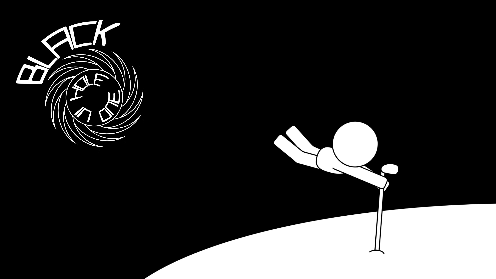

What have I built?
I've implemented many projects in my courses at the Univeristy of Michigan that I can't share directly, including but not limited to:
- A Euchre Simulator - Programmed in C++, simulated using Classes and Standard Input/Output
- A Search Engine - A scalable search engine using TF-IDF and PageRank to retrieve relevant documents based on queries. During this project, I also implemented a Mapreduce framework that assigns mapping and reducing tasks to workers
- A Full Stack Web App - A full-stack application using Flask that simulates the core features of Instagram. Featuring dynamic interactions between server and user, such as user authentication, account handling, and creating/liking posts; deployed to AWS. During this project I also created client side interactions using the React framework, such as infinite scrolling for new content and posting comments without the need to refresh the page
- As well as many exploratory projects such as A Pipelined Datapath Simulator, Creating and Managing Hash Tables Through User Composition, Implementation of Optimization Algorithms, and more
The projects I CAN share with you however are found below!